Unlocking Collaborative Power with Git, GitHub CI/CD, and LLMs in Pharma
Intro
Objectives:
- Learn about Tools that have been used on the R Consortium FDA Pilots to collaborate and to ensure accuracy and reproducibility.
- renv, git/GitHub, LLMs, CI/CD
- Learn more about the Pilots and their role in helping to make R and open source a viable option for delivering safe and effective drug submissions.
Intro to R Consortium
- Submission Working Group meets the first Friday of every month. Open to all!
- Click here to learn how to join.
Intro to R Consortium R-based Submission Pilots to FDA
 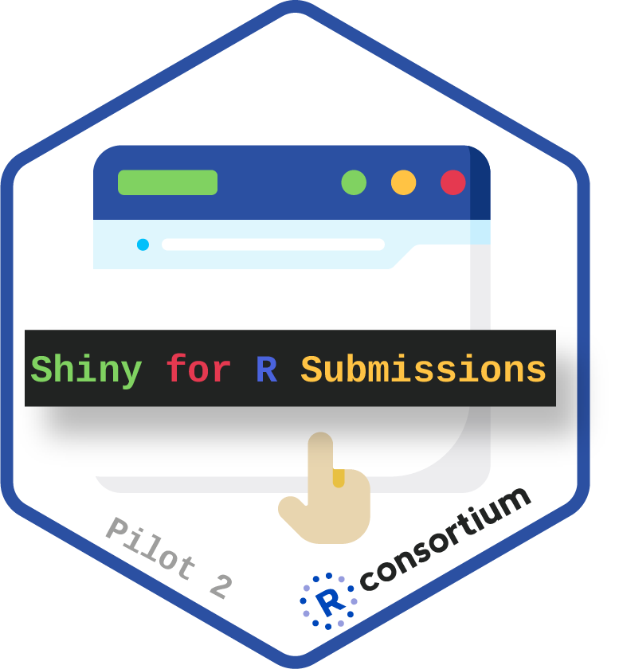
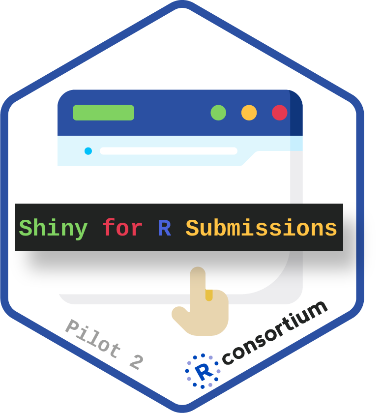 
 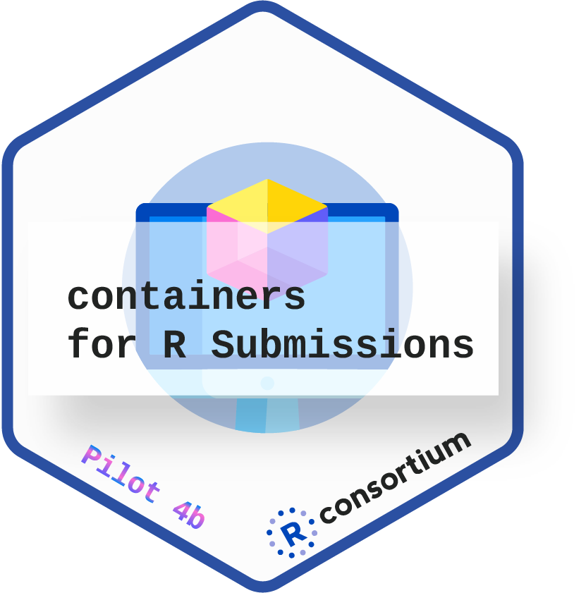
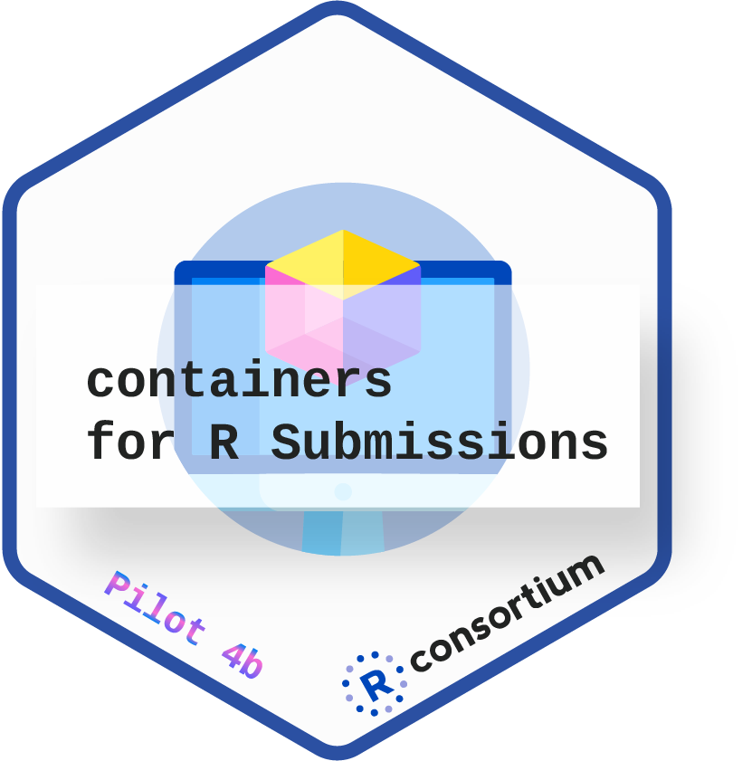 
Problem Statement
How do people in the Pilots collaborate, ensure accuracy and reproducibility while working across multiple companies, platforms, OS, timezone and skill sets?
renv
git, GitHub
CI/CD
LLMs
Reproducibile Environments
Reproducibile Environments with Open Source Products
Reproducibile Environments with Open Source Products
A drug company uses open source products, like R, to demonstrate that a drug is safe and effective.
How can the company ensure the analysis is reproducible when given to a regulatory agency?
renv: Reproducible R Package Environments 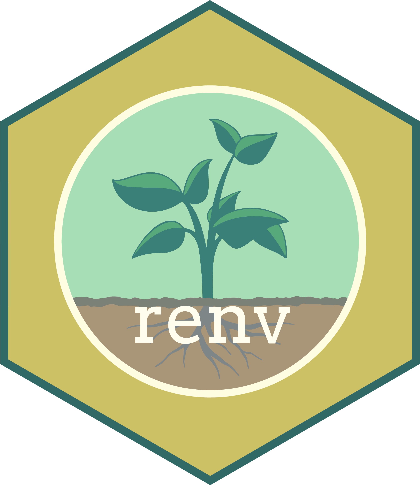
- Isolates project-specific R package libraries
- Captures and locks package versions for reproducibility
renv.lock- FDA uses this to rebuild environment and LLMs consume to build the ADRG
- The Pilots did/are using this - just in case this wasn’t clear!!
renv.lockis the anchor for everything.
- Simplifies dependency management and restoration
- Packages depend on other packages!!
- Integrates smoothly with RStudio and other tools
- Facilitates collaboration by sharing a consistent environment
Peek at the renv.lock
{
"R": {
"Version": "4.4.3",
"Repositories": [
{
"Name": "CRAN",
"URL": "https://packagemanager.posit.co/cran"
}
]
},
"Packages": {
"MASS": {
"Package": "MASS",
"Version": "7.3-65",
"Source": "Repository",
"Priority": "recommended",
"Date": "2025-02-19",
"Revision": "$Rev: 3681 $",
"Depends": [
"R (>= 4.4.0)",
"grDevices",
"graphics",
"stats",
"utils"
],
"Imports": [
"methods"
],
"Suggests": [
"lattice",
"nlme",
"nnet",
"survival"
],
"Authors@R": "c(person(\"Brian\", \"Ripley\", role = c(\"aut\", \"cre\", \"cph\"), email = \"Brian.Ripley@R-project.org\"), person(\"Bill\", \"Venables\", role = c(\"aut\", \"cph\")), person(c(\"Douglas\", \"M.\"), \"Bates\", role = \"ctb\"), person(\"Kurt\", \"Hornik\", role = \"trl\", comment = \"partial port ca 1998\"), person(\"Albrecht\", \"Gebhardt\", role = \"trl\", comment = \"partial port ca 1998\"), person(\"David\", \"Firth\", role = \"ctb\", comment = \"support functions for polr\"))",
"Description": "Functions and datasets to support Venables and Ripley, \"Modern Applied Statistics with S\" (4th edition, 2002).",
"Title": "Support Functions and Datasets for Venables and Ripley's MASS",
"LazyData": "yes",
"ByteCompile": "yes",
"License": "GPL-2 | GPL-3",
"URL": "http://www.stats.ox.ac.uk/pub/MASS4/",
"Contact": "<MASS@stats.ox.ac.uk>",
"NeedsCompilation": "yes",
"Author": "Brian Ripley [aut, cre, cph], Bill Venables [aut, cph], Douglas M. Bates [ctb], Kurt Hornik [trl] (partial port ca 1998), Albrecht Gebhardt [trl] (partial port ca 1998), David Firth [ctb] (support functions for polr)",
"Maintainer": "Brian Ripley <Brian.Ripley@R-project.org>",
"Repository": "CRAN"
}
...4 key renv commands
Initializes a new renv project by creating a project-specific library and a lockfile.
Checks for any discrepancies between the state of the project’s library and the
renv.lockfile.Captures the state of your current project environment and writes it to the
renv.lockfile.Removes one or more packages from your project’s library, making it easy to manage unused dependencies.
renv tips and tricks
We don’t need to deliver every package to regulatory agencies, e.g. as we have built custom solutions to help with our processes we realized these are not actually used in the analysis. How can we ignore them!?!
.renvignoreis a big win here! Just like a.gitignoreDon’t edit the
renv.lockfile manually - use the nice functions!Don’t be scarred to update to latest packages either - but use the nice functions!
LLM & ADRG with Ellmer
Manually generated ADRG from pilot 3
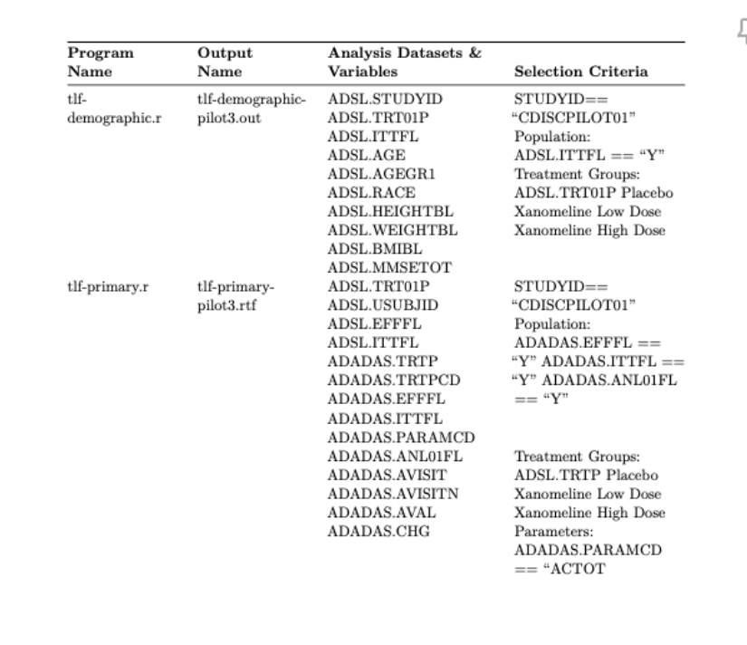
LLM generated ADRG in pilot 5
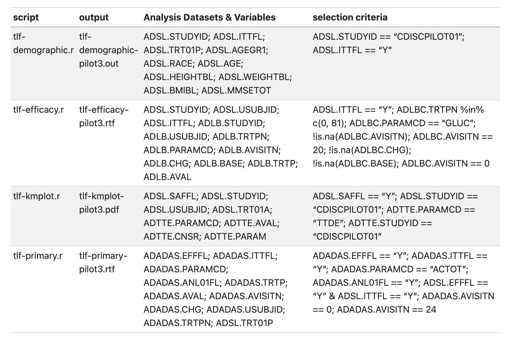
LLM & ADRG with btw
Git/GitHub
Gitflow
Our goals:
To maximize useful dev work,
to maximize code quality, and
to maximize code velocity.
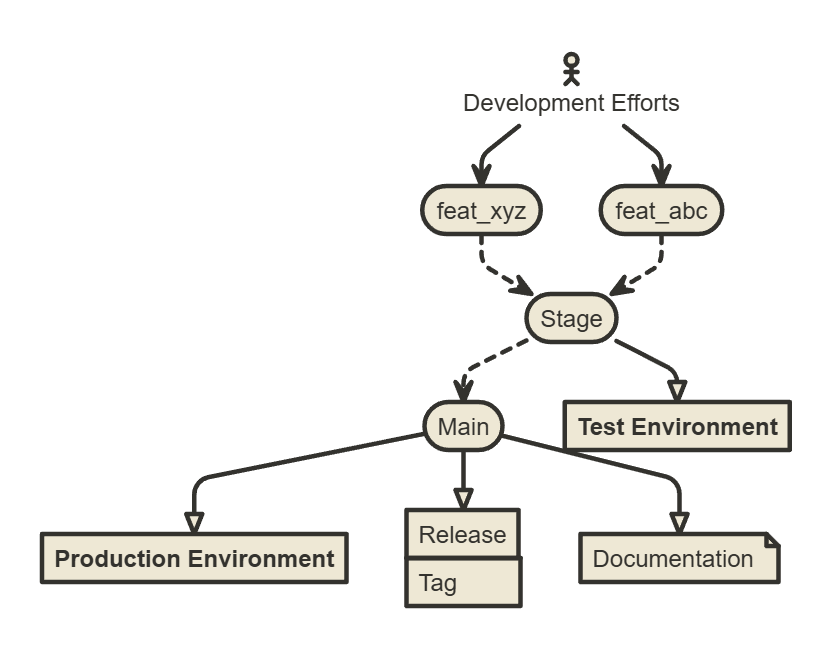
Pull Requests and Collaboration
Code moving between branches or a transision of “state.” A structured way for reviewing code
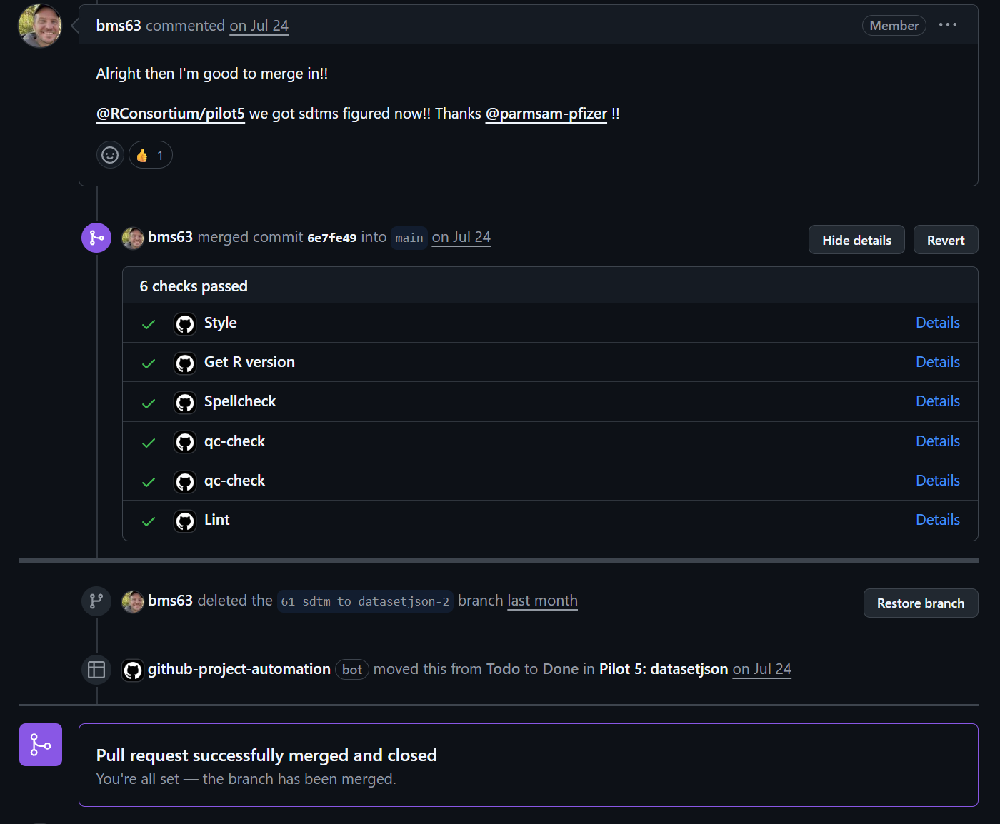Code Quality Automated
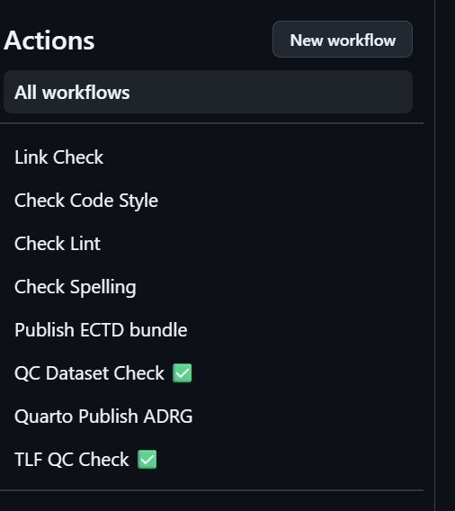
- 🕺Code Style
- 🧹Linting
- Spelling
- 📝Testing
- 📊Code Coverage
- ✅Build Check
Code Quality and AI
🚀Deployments
Code being deployed out to the world
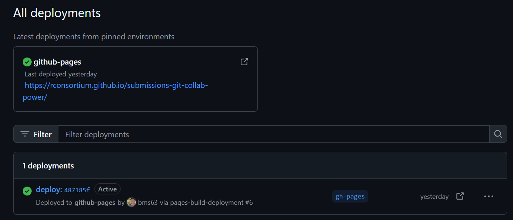Manual Work
Assemble Submission Pilot 5 files to meet eCTD specifications:
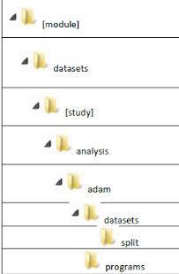
GitHub Actions to the Rescue!
- Run arbritrary commands or scripts inside workflow
- Launch on key events (updates to main branch) or schedule (cron)
- Perform Git operations on our behalf
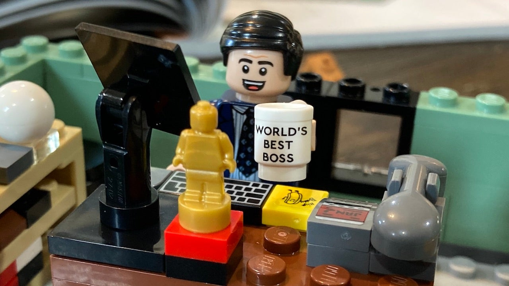
Bash Scripting
create-ectd-bundle.sh
# Define file and directory paths
ECTD_BUNDLE_DIR=submissions-pilot5-datasetjson-to-fda
ECTD_LETTER_DIR=${ECTD_BUNDLE_DIR}/m1/us
ECTD_ROOT_DIR=${ECTD_BUNDLE_DIR}/m5/datasets/rconsortiumpilot4container/analysis/adam
# additional paths ...
# Create directory structure for ectd bundle
mkdir -p "${ECTD_LETTER_DIR}"
mkdir -p "${ECTD_PROGRAMS_DIR}"
mkdir -p "${ECTD_ADAM_DATASETS_DIR}"
mkdir -p "${ECTD_SDTM_DATASETS_DIR}"
# example: copy helper fcns script
if [ -f "${PROGRAMS_SOURCE_DIR}/pilot5-helper-fcns.r" ]; then
cp "${PROGRAMS_SOURCE_DIR}/pilot5-helper-fcns.r" "${PROGRAMS_DESTINATION_DIR}/."
echo "pilot 5 helper script copied to ${PROGRAMS_DESTINATION_DIR}/pilot5-helper-fcns.r"
fi
# additional operations ...Bash Scripting (continued)
push-ectd-bundle.sh
# Set up file paths
ECTD_REPO_DIR=submissions-pilot5-datasetjson-to-fda
# Navigate to clone of ECTD repo
cd "./${ECTD_REPO_DIR}"
echo "Open root of ECTD GitHub Repo"
# Commit updated bundle to repository
git add -A .
git config user.name github-actions
git config user.email github-actions@github.com
git commit -am "GH Action: Update Pilot 5 ECTD bundle"
git push --set-upstream origin main
echo "Updated ECTD bundle successfully to repository"GitHub Action Workflow Steps
Run automatically on each push to main branch event
publish-ectd-bundle.yaml
Automation for the Win
Unlocking Collaborative Power with Git, GitHub CI/CD, and LLMs in Pharma